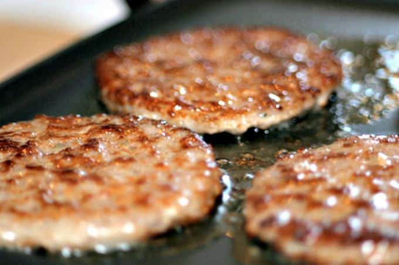

Breakfast Sausage

Description
This recipe will help you create round juciy breakfast suasages for the whole family!
Ingredients
- 1 tablespoon brown sugar
- 2 teaspoons dried sage
- 2 teaspoons salt
- 1 teaspoon ground black pepper
- ¼ teaspoon dried marjoram
- ⅛ teaspoon crushed red pepper flakes
- 1 pinch ground cloves
- 2 pounds ground pork
Steps
- Mix together brown sugar, sage, salt, black pepper, marjoram, red pepper flakes, and cloves in a small bowl until well combined.
- Place pork in a large bowl. Add spice mixture and mix with your hands until well combined. Form mixture into 6 patties.
- Heat a large skillet over medium-high heat. Add patties and saute until browned and crispy, about 5 minutes per side. An instant-read thermometer inserted into the center should read at least 160 degrees F (71 degrees C).